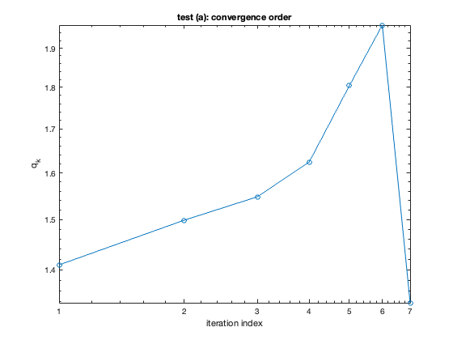
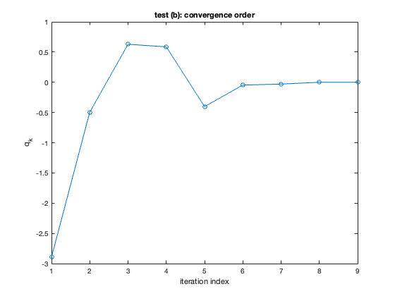

% kundyz muktar, matlab r2023a, sci prog a2, ex 6 % we use z0=5 in each case. then we compute errors e_k = |z_k - x_star| and the convergence order q_k = log(e_{k+1}/e_k)/log(e_k/e_{k-1}). % aslo we plot q_k over k. clear; clc; close all;
a. f(z) = z^2 + exp(z) - 2, df(z) = 2z + exp(z) ref sol 0.537274491735866
f_a = @(z) z.^2 + exp(z) - 2; df_a = @(z) 2*z + exp(z); x_star_a = 0.537274491735866; z0 = 5; [z_a, zvec_a] = newton(f_a, df_a, z0); errors_a = abs(zvec_a - x_star_a); q_a = compute_order(errors_a); figure; plot(1:length(q_a), q_a, 'o-'); loglog(1:length(q_a), q_a, 'o-'); xlabel('iteration index'); ylabel('q_k'); title('test (a): convergence order');
b. f(z) = log(z^2) - z = 2*log(z) - z, df(z) = 2/z - 1 ref sol 0.6529186404192047
f_b = @(z) 2*log(z) - z; df_b = @(z) 2./z - 1; x_star_b = 0.6529186404192047; [z_b, zvec_b] = newton(f_b, df_b, z0); errors_b = abs(zvec_b - x_star_b); q_b = compute_order(errors_b); figure; plot(1:length(q_b), q_b, 'o-'); xlabel('iteration index'); ylabel('q_k'); title('test (b): convergence order');
c. f(z) = (cos(2z))^2 - z^2 df(z) = 2*cos(2z)*(-2*sin(2z))-2z = -4*cos(2z)*sin(2z) - 2z ref sol 0.514933264661129
f_c = @(z) (cos(2*z)).^2 - z.^2; df_c = @(z) -4*cos(2*z).*sin(2*z) - 2*z; x_star_c = 0.514933264661129; [z_c, zvec_c] = newton(f_c, df_c, z0); errors_c = abs(zvec_c - x_star_c); q_c = compute_order(errors_c); figure; plot(1:length(q_c), q_c, 'o-'); xlabel('iteration index'); ylabel('q_k'); title('test (c): convergence order');
%%%%%%%%%%%%%%%%%%%%%%%%%%%%%%%%%%%%%%%%%%%%%%%%%%%%%%%%%%%%%%%%%%%%%%%%%%% function [z, zvec] = newton(f_handle, df_handle, z0) % implements newton's method for f_handle: Rd to Rd w jacobian df_handle % columns of zvec are the iterates. z is the final one. abs_tol = 1e-12; max_iters = 1000; d = length(z0); zvec = zeros(d, max_iters + 1); zvec(:, 1) = z0; for iter_index = 1:max_iters current_z = zvec(:, iter_index); % newton step zvec(:, iter_index + 1) = current_z - df_handle(current_z)\f_handle(current_z); if norm(zvec(:, iter_index + 1) - current_z) <= abs_tol break; end end zvec = zvec(:, 1:iter_index + 1); % when method stops early, reset the zvec size z = zvec(:, end); % extracting the final sol end
function q_vals = compute_order(e_vals) n = length(e_vals); if n < 3 q_vals = []; return; end %%%%%%%%5%%%%%%%%%%%%%%%%%%%%%%%%%%%%%%%%%% q_vals = zeros(1, n-2); for i = 2:(n-1) if e_vals(i) > 0 && e_vals(i-1) > 0 q_vals(i-1) = log(e_vals(i+1)/e_vals(i)) / log(e_vals(i)/e_vals(i-1)); % given error %%%%%%%%5%%%%%%%%%%%%%%%%%%%%%%%%%%%%%%%%%% else q_vals(i-1) = NaN; end end end